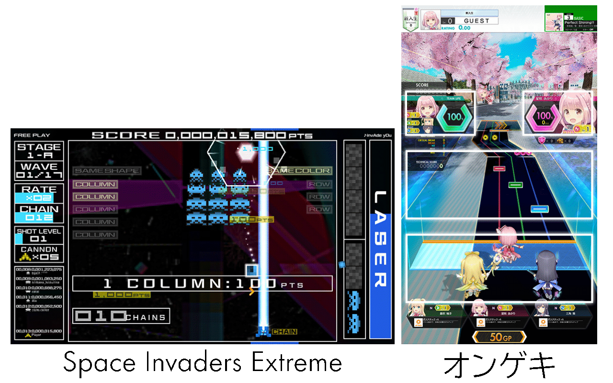

あれくま
2022年1月29日
オトシューはスマートフォンとアーケードでプレイできるSTGです。
わりとオーソドックスな横スクロールSTGです。
非常にシンプルな縦スクロールの音ゲーです。
STGに音ゲーをぶちこんだ。
ではない。
STG以外を音ゲーにしたところ。
音ゲーにSTGをぶちこんだとも言えなくもない。
STGと音ゲーは水と油……なのか？
音ゲーはSTGの一種である。
| STG | 音ゲー |
|---|---|
| 基本一人プレイ | 基本一人プレイ |
| 狙ってタイミングよくボタンを押す | タイミングよく狙ったボタンを押す |
| 基本自動スクロール | 自動スクロール |
| スコアを競う | スコアを競う |
一種は言いすぎだとしても親戚みたいなもの。

完全に一致
メインのゲーム外がけっこう違う。
| STG | 音ゲー |
|---|---|
| ステージ構成はある程度固定 | 好きなステージを選ぶ |
| 死ぬか全面クリアで終わり | 一定曲数遊んだら終わり |
| ステージ間で状態を引き継ぐ | ステージ毎に状態はリセット |
| 難易度は開始時に選択(無いことも) | ステージ毎に難易度選択できる |
STGはゼビウスの頃からあまり大きくは変わらないと言える。
音ゲー初期はアーケードゲームらしくSTGに近いシステムだったが、現在では上記のような物が主流となっている。
1曲で1プレイが完結してるとも言える。
1プレイが短いことで気軽に遊べるようになっており、豊富な難易度やステージを自由に選べるのでリプレイ性が高い。
一方でステージ毎の見た目の違いやストーリー性は薄い。
……が、いまどきSTGにそんなの求めるか？
ところでオトメディウスの話する？
似たような音ゲーシステムを取り入れたSTG。
さすが音ゲーのコナミ……と思ったが、蓋を開けたら中途半端な失敗作。
オトシューはオトメディウスのあるべきだった形と考えられる。 (音ゲーパートはともかく)
これが15年前に出来てたらSTGの歴史が変わってたかも。
メインゲーム外は音ゲーのシステム
STGはそんな難しくはない……とはいえ曲によっては難しいものもある。
敵の出現位置や弾のパターンは固定です。なんとランダム弾は存在しないようです。見極め、覚えて避けましょう。
ショップでライフのアップグレードを買うと死ねる回数が増えるよ。
音ゲーパートはいくら失敗しても死なないので気にしなくていいです。
最初は曲数が制限されているが、プレイしていると増えていく。
走行距離は曲の評価が良いと伸びる。ショップで走行距離のアップグレードアイテムを買うと早く解禁できます。
メロディランをスキップすると最低限しか伸びないっぽいので真面目にやろう。
曲毎の評価を上げていこう。
評価によってリザルト画面のボイスが変わる。B以上だと上手くいったようなボイスになるのでB以上を目指そう。
評価はスコアを稼ぐことで上がる。B以上を目指すなら、音ゲーパート直前で死なないことを心掛けよう。
それ以上の評価を目指すなら……敵に近接するとスコアが伸びる！
パターン化して敵に張り付く、これオトシューの鉄則！
最初はよくわからないままにどんどん上がっていく段位だが、途中から伸びなくなる。
段位は曲の難易度と評価で決まるスキルポイントの上位30曲の合計で決まる。 一つの曲で難易度が違うものは一番高いスキルポイントが使われる。
スキルポイントは評価SSSの時に曲の難易度×10の値になる。 つまり難易度が高い曲ほどスキルポイントの最高値も高く伸びやすい。 ある程度伸びなくなったら難しい曲にも挑戦しないといけない。
ただ、上位30曲だけ選ばれるので全部の曲を頑張らないといけないわけではない。 苦手な曲は置いといてかまわないので、伸ばせそうな30曲を伸ばしていこう。
上位30曲はスキルチャートで見れるのと、曲選択画面にあるスキルポイントに付くマークで判別できる。 まだ伸ばせそうな曲がないか探してみよう。
ランキングは段位と同じくスキルポイントの上位30曲分合計で競われる。
つまり段位を上げていけばランキングも上がっていくので段位だけ目指しとけばいいんじゃないですかね。
なお上位はスキルポイント3300ポイント以上の皆伝が並ぶ。最上位ともなると理論値に近いんじゃないかというレベルに到達している。
評価を上げるにはスコアを稼ぐ必要がある。
右上に表示されているDPS(秒間ダメージ)が大事
全敵爆発時のスコアは大きいので、音ゲーパートに入る時にはなるべくDPSを上げるとスコアが伸びやすくなる。
つまりスコアを伸ばすには、音ゲーパート前を意識して敵に接近して撃ち込もう。 ただし被弾しない程度にね。
音ゲーパートの結果は全敵爆発スコアの倍率になる。
DPSを上げてても音ゲーパートの結果が悪いとスコアが伸びない。
DPSを上げるのが重要だけど、音ゲーパートもそこそこには頑張りましょう。
また、音ゲーパートの出来によってリザルトでボーナスも入ります。
攻略Wiki https://wikiwiki.jp/otosyu/ に全部書いてあるんでそれ見ればいいです。